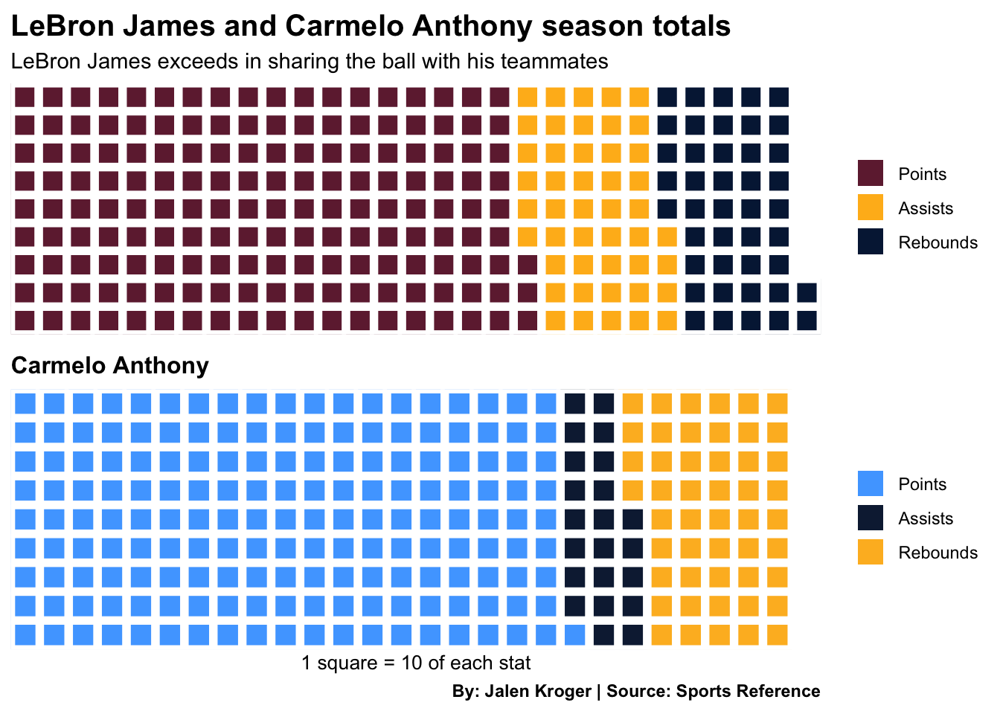
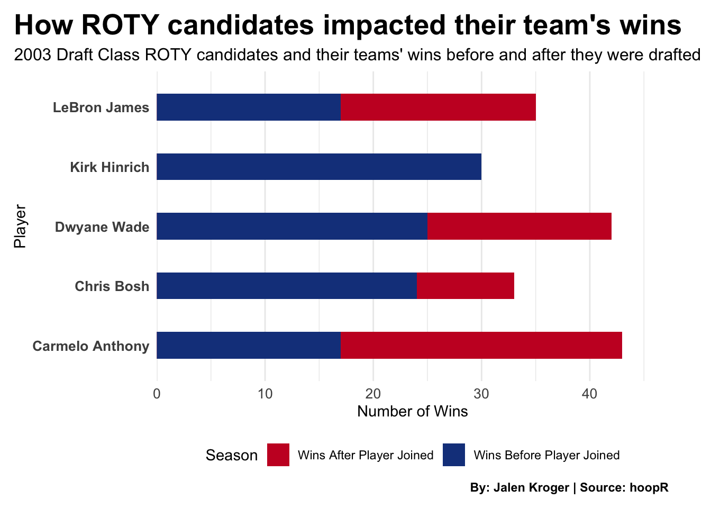

The 2003 NBA draft class was a star-studded one, bolstering many first-ballot Hall of Fame players, and one player who may go down as the greatest of all time. LeBron James’ career is impressive, but it had to start somewhere.
James’ first award in the NBA was Rookie of the Year, an award he won over the third overall pick, Carmelo Anthony. Anthony bolstered a fantastic season himself, but does it compare to James’? Would it be enough to win Rookie of the Year?
Code
library(tidyverse)library(hoopR)library(patchwork)library(waffle)LeBronJamesWaffleChart <-c("Points"=1654, "Assists"=465, "Rebounds"=432)CarmeloAnthonyWaffleChart <-c("Points"=1725, "Assists"=227, "Rebounds"=498)iron(waffle( LeBronJamesWaffleChart/10,rows =9,colors =c("#6F263D", "#FFB81C", "#041E42") ) +labs(title ="The King and his royal court",subtitle ="LeBron James exceeds in sharing the ball with his teammates" ) +theme(plot.title =element_text(size =20, face ="bold"),axis.title =element_text(size =15),plot.caption =element_text(face ="bold"),axis.title.y =element_blank() ),waffle( CarmeloAnthonyWaffleChart/10,rows =9,colors =c("#4FA8FF", "#0E2240", "#FDB927") ) +labs(title ="Carmelo Anthony",x ="1 square = 10 of each stat",caption ="By: Jalen Kroger | Source: Sports Reference" ) +theme(plot.title =element_text(size =12, face ="bold"),axis.title =element_text(size =10),plot.caption =element_text(face ="bold"),axis.title.y =element_blank() ))

Carmelo Anthony outrebounded and outscored LeBron James, but he didn’t tally nearly as many assists, one of the most important parts of basketball. Anthony is quite a scorer, often being equated as nothing more than a scorer, but his defense doesn’t lack.
Code
library(tidyverse)library(hoopR)library(ggalt)library(ggtext)nba_players_2004 <-nba_playerindex(season ="2003-04")rookies_2004 <- nba_players_2004$PlayerIndex |>filter(DRAFT_YEAR =="2003")firstroundrookies_2004 <- rookies_2004 |>filter(DRAFT_ROUND =="1")secondversionrookies <-nba_leaguedashplayerstats(season ="2003-04",season_type ="Regular Season",measure_type ="Advanced",draft_pick ="1-30")secondlistofrookies <- secondversionrookies$LeagueDashPlayerStatscombined_rookies <- firstroundrookies_2004 |>left_join(secondlistofrookies, by =c("PERSON_ID"="PLAYER_ID"))all_player_cumestats <-nba_leaguedashplayerstats(season ="2003-04",season_type ="Regular Season",measure_type ="Base", per_mode ="Totals")all_player_stats <- all_player_cumestats$LeagueDashPlayerStatsfinal_combined_rookies <- combined_rookies |>left_join(all_player_stats, by =c("PERSON_ID"="PLAYER_ID"))lotterypicks <- final_combined_rookies |>filter(DRAFT_NUMBER %in%c("1", "2", "3", "4", "5", "6", "7", "8", "9", "10", "11", "12", "13", "14", "15"))lotterypicks <- lotterypicks |>mutate(PLAYER_NAME =paste(PLAYER_FIRST_NAME, PLAYER_LAST_NAME),OFF_RATING =as.numeric(OFF_RATING),DEF_RATING =as.numeric(DEF_RATING)) |>filter(PLAYER_NAME !="Nick Collison") |>arrange(DRAFT_NUMBER)ggplot() +geom_dumbbell(data = lotterypicks, aes(y =reorder(PLAYER_NAME, DRAFT_NUMBER), x = OFF_RATING, xend = DEF_RATING),size =2,colour ="#c7c8ca",colour_x ="#22884c",colour_xend ="#d00000") +labs(title ="Melo is more than a scorer", subtitle ="A positive offensive and defensive rating differential is indicated with the green dot (offensive rating) on the right, vice versa.",y ="Player",x ="Offensive and Defensive Rating Differential",caption ="By: Jalen Kroger | Source: hoopR" ) +theme_minimal() +theme(plot.title =element_text(size =16, face ="bold"),axis.title =element_text(size =10), plot.subtitle =element_text(size =8), plot.caption =element_text(face ="bold"),axis.text.y =element_text(face ="bold"),panel.grid.minor =element_blank(),plot.title.position ="plot" )
Anthony’s defensive rating isn’t great, but neither is LeBron’s. In fact, LeBron’s defensive rating is only .2 better than Anthony’s. On top of that, Carmelo Anthony’s offensive rating if higher than LeBron’s, giving him a positive offensive and defensive rating differential.
Individual stats are cool, but basketball is a team sport, and team wins matter above all. As previously shown, Anthony is not the best passer, but maybe his assist totals didn’t have an impact on his team’s success.
Code
library(tidyverse)library(hoopR)standings_before <-nba_leaguestandings(season ="2002-03")standings_after <-nba_leaguestandings(season ="2003-04")standings_before_df <-as.data.frame(standings_before$Standings)standings_after_df <-as.data.frame(standings_after$Standings)team_wins_before <- standings_before_df |>select(TeamID, TeamName, WINS) |>rename(team_wins_before = WINS)team_wins_after <- standings_after_df |>select(TeamID, TeamName, WINS) |>rename(team_wins_after = WINS)lotterypicks <- lotterypicks |>left_join(team_wins_before, by =c("TEAM_ID"="TeamID")) |>left_join(team_wins_after, by =c("TEAM_ID"="TeamID"))player_data <- lotterypicks |>select(PLAYER_NAME, TEAM_ID, team_wins_before, team_wins_after) |>filter(PLAYER_NAME %in%c("Carmelo Anthony", "LeBron James", "Dwyane Wade", "Chris Bosh", "Kirk Hinrich", "Marquis Daniels")) |>mutate(team_wins_before =as.numeric(team_wins_before),team_wins_after =as.numeric(team_wins_after) ) |>distinct()ggplot(data = player_data, aes(x = PLAYER_NAME)) +geom_col(aes(y = team_wins_after, fill ="Wins After Player Joined"),position =position_dodge(width =0.9), width =0.45) +geom_col(aes(y = team_wins_before, fill ="Wins Before Player Joined"), position =position_dodge(width =0.9), width =0.45) +labs(title ="Candidates and their teams",subtitle ="2003 Draft Class ROTY candidates and their impact on team win totals",x ="Player",y ="Number of Wins",fill ="Season",caption ="By: Jalen Kroger | Source: hoopR") +coord_flip() +scale_fill_manual(values =c("Wins Before Player Joined"="#17408B", "Wins After Player Joined"="#C9082A")) +theme_minimal() +theme(axis.text.y =element_text(size =10, face ="bold"), axis.text.x =element_text(size =10),plot.title =element_text(size =20, face ="bold"),plot.subtitle =element_text(size =12),plot.caption =element_text(face ="bold"),plot.margin =margin(r =30, l =10, t =10, b =10), panel.grid.major.y =element_blank(),plot.title.position ="plot",legend.position ="bottom" ) +scale_y_continuous(expand =expansion(mult =c(0, 0.1)))

Compared to the other rookies that received votes for Rookie of the Year, Carmelo Anthony’s Nuggets increased the most, and most dramatically. LeBron’s Cavaliers also started at the same number of wins (17), but they didn’t make it to the playoffs when the Nuggets did.
To add further context to that, the Cavaliers that season had the same number of double-digit scorers as the Nuggets. Four out of five of the Cavs’ double-digit scorers had 15+ points per game, while the Nuggets only had one of their five reach that threshold. That one player was Carmelo Anthony.
LeBron James receives a lot of credit for carrying bad teams in his early Cleveland years, but his teammates in his rookie year were better scorers than Carmelo Anthony’s, and he was able to take them to the playoffs.
Scoring isn’t everything, and an increase in wins doesn’t exactly correlate with the addition of a player. The case for Carmelo Anthony to have won Rookie of the Year in 2003 can be made, but it can’t change what happened.